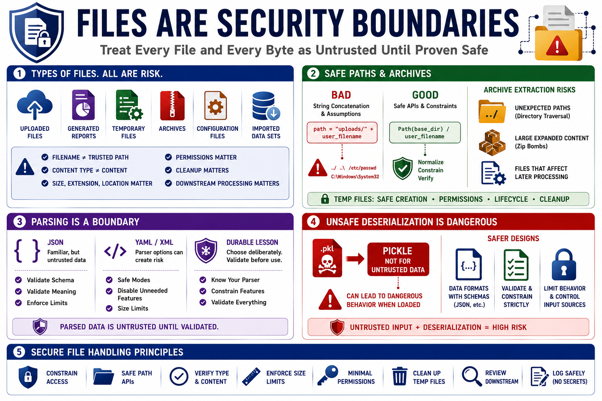

File Handling, Parsing, and Deserialization Mistakes
Connecting to LMS... Progress: in progress

Narration
Files are security boundaries. Uploaded files, generated reports, temporary files, archives, configuration files, and imported data sets all deserve caution. A filename supplied by a user or partner system should not be treated as a trusted path. A content type supplied by a client should not be treated as proof of file contents. File size, extension, storage location, permissions, cleanup behavior, and downstream processing all matter.
Path handling mistakes often begin with string concatenation and assumptions about where a file will land. Defensive code uses safe path APIs, normalizes paths carefully, constrains access to intended directories, avoids writing into executable locations, and treats archives with care. Archive extraction risks at a high level include unexpected paths, large expanded content, and files that affect later processing. Temporary files also need safe creation, permissions, lifecycle management, and cleanup.
Parsing is another boundary. JSON is familiar, but parsed JSON is still untrusted data until validated for the expected schema and business meaning. YAML and XML parsers can have security-sensitive options, depending on how they are configured and what features they allow. The durable lesson is to choose parsers deliberately, use safe modes where available, disable unnecessary features, enforce size limits, and validate parsed structures before use.
Unsafe deserialization deserves special attention in Python. Pickle is designed for Python object serialization, not for accepting untrusted data. Loading serialized objects from untrusted or poorly controlled sources can create dangerous behavior depending on context. Safer designs prefer data formats with clear schemas and limited behavior. When file handling, parsing, or deserialization touches user-controlled input, treat it as a high-value review area rather than ordinary plumbing.